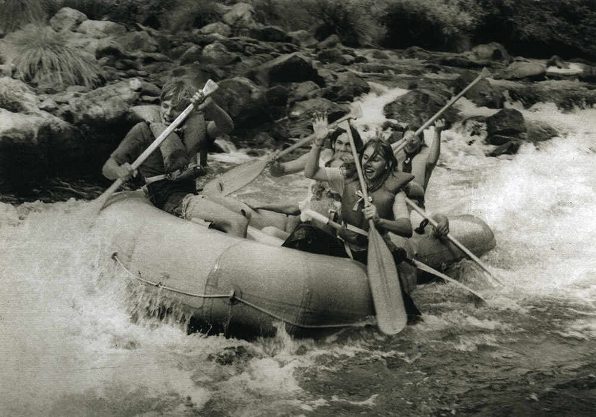

Founded in 2005, White Water Rafting has guided thousands of adventurers on exciting rafting expeditions. With safety, fun, and nature at our core, we’ve built memories that last a lifetime. Our journey began with a simple mission: to share the exhilarating experience of white water rafting with the world. Through dedication and a passion for adventure, we have grown into a trusted name in the rafting community. Our team's expertise and commitment to excellence have earned us a reputation for providing safe, thrilling, and unforgettable rafting trips. As we look to the future, we remain focused on our core values and continue to innovate and expand our offerings. We are proud to have created lasting memories for so many, and we look forward to welcoming new adventurers to our rafting family.

Our experienced guides and top-notch equipment ensure a thrilling and safe experience for all our guests. Whether you're a seasoned rafter or a first-timer, we have adventures for everyone. Our guides are not just skilled professionals, but passionate adventurers who love sharing their knowledge and enthusiasm with others. They are trained to handle all situations on the river and are dedicated to ensuring that every participant has a safe and enjoyable experience. Our equipment is regularly maintained and updated to meet the highest safety standards, giving you peace of mind as you embark on your rafting journey. We believe that the key to a great rafting adventure is a combination of expert guidance, reliable equipment, and a spirit of camaraderie. Join us and discover the thrill of white water rafting with a team that is as excited about the adventure as you are!